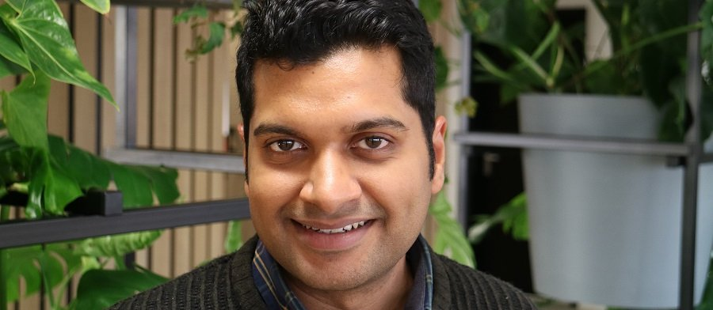

JEROEN
FAMAEY
HOME
TEAM
PUBLICATIONS
PROJECTS
☰
ABOUT ME
AWARDS
TEACHING
SERVICE
TEAM
PUBLICATIONS
PROJECTS
PhD Students
Calvin Baek
Since 2022
Ultra-low-latency communication in large-scale robot swarms
Nabeel Nisar Bhat
Since 2022
Joint communication and sensing for real-time spatial computing in XR applications
Jalal Jalali
Since 2022
Performance optimization of energy efficient mmWave mesh networks with renewable energy
Jakob Struye
Since 2019
Ultra-reliable low-latency mmWave communications for multi-user VR
Adnan Sabovic
Since 2019
Energy-aware scheduling in battery-less IoT devices

Ashish Kumar Sultania
Since 2017
Joint latency-energy optimization in cellular IoT networks
Serena Santi
Since 2016
Energy efficient heterogeneous wireless IoT networks
Postdoctoral Researchers
Andrey Belogaev
Since 2022
Ultra-reliable low-latency next-gen Wi-Fi for real-time audio and video streaming
Alumni
Filip Lemic
2018-2022
MSCA postdoctoral fellow
Currently at
Polytechnic University of Catalonia (UPC)
, Spain
Martina Capuzzo
2021
Visiting PhD researcher
Currently at
University of Padova
, Italy
Glenn Daneels
2014-2021
PhD student,
Towards an Energy-efficient, Responsive and Reliable Industrial Internet of Things
Currently at
Atlas Copco
, Belgium
Carmen Delgado
2018-2020
Postdoctoral researcher
Currently at
i2CAT foundation
, Spain
Tom De Schepper
2015-2019
PhD student,
Multi-technology management of heterogeneous wireless networks
Currently at
University of Antwerp
, Belgium
Le Tian
2015-2019
PhD student,
Scalable Low-Power Wi-Fi for the Internet of Things
Currently at Information Engineering University, China